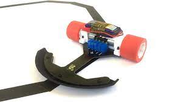

-

PID Line Follower
This was a great project under taken by me and my
friends at our university. I learnt a lot of new conc-
epts about PID control and advanced arduino pro-
gramming.I also learnt the use of a lot of new com-
ponents like 8 sensor array programming and use
of L298H motor shield.

Bluetooth controlled bot
This a bluetooth controlled bot made by me and my
friends. It is a very interesting project where I learnt
use of hc-05 bluetooth module, the L293D motor shi-
eld and several other new devices. Also I learnt use of
different types of motor in this project.